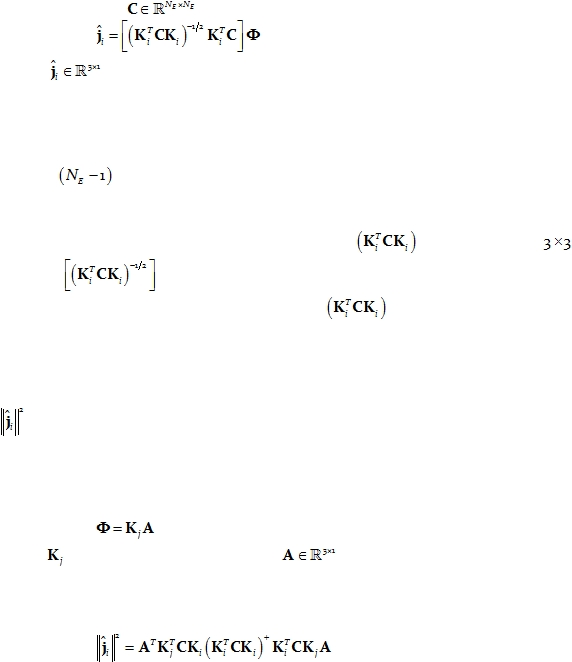

|

Cite as: “R.D. Pascual-Marqui: Discrete, 3D distributed, linear imaging methods of electric neuronal activity. Part 1: exact, zero
error localization. arXiv:0710.3341 [math-ph], 2007-October-17, http://arxiv.org/pdf/0710.3341 ”
Page 4 of 16
4.
A
family of discrete, 3D distributed linear imaging
methods with
exact, zero error localization
The family of linear imaging methods considered here is parameterized by a
symmetric matrix
, such that:
Eq. 15:
where
is any estimator for the electric neuronal activity at the i-th voxel, not
necessarily current density (e.g. it can be standardized current density, as in Pascual-Marqui
2002).
Note that in the case of MEG, C must be non-singular. In the case of EEG, C must be
of rank
, with its null eigenvector equal to a vector of ones (accounting for the
reference constant).
Note that in Eq. 15, the symmetric matrix
is of dimension
, and the
notation
indicates the symmetric square root inverse. In the particular case of
MEG in a spherical head model, the matrix
is of rank two, and its
symmetric
square root pseudo-inverse must be used.
Localization inference in neuroimaging is typically based on the search for large
values of the power (squared amplitude) of the estimator for electric neuronal activity, i.e.
.
In order to test the localization properties of a linear imaging method, consider the
case when the actual source is an
arbitrary point-test source at the j-th voxel. This means
that:
Eq. 16:
where
is defined in Eq. 7 above, and
is an arbitrary non-zero vector (containing
the dipole moments).
Plugging Eq. 16 into Eq. 15 and taking the squared amplitude gives:
Eq. 17:
where the superscript “+” denotes the Moore-Penrose pseudoinverse (which is equal to the
common inverse if the matrix is non-singular).